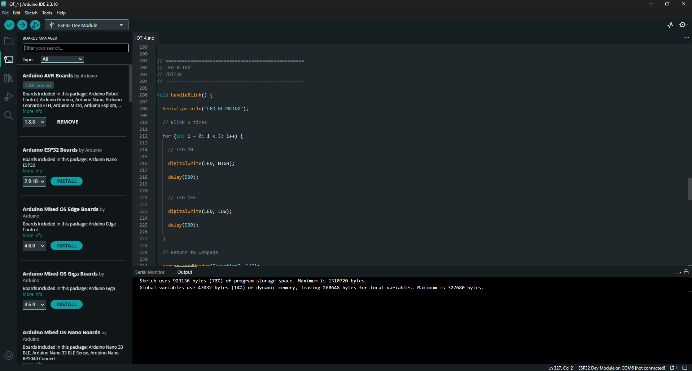
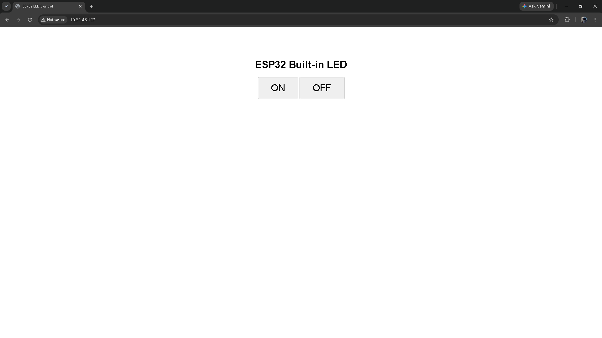

Hardware Board
NodeMCU ESP-WROOM-32
Dual-Core Xtensa LX6 MCU
TASK 01 / EMBEDDED IoT WEB SERVER
Demonstrating wireless microcontroller actuation by creating a local HTTP web server on ESP32 to control the onboard built-in LED (GPIO 2) from a web browser interface in real time.
Hardware Board
Dual-Core Xtensa LX6 MCU
Actuator / Pin
Onboard active-HIGH LED
Network & Server
Port 80 · Local Wi-Fi Network
Hands-on Work
Photographic proof of the hands-on engineering lab session: programming the ESP32 in Arduino IDE and testing the live web-controlled LED actuation.



Live Demonstration
Live demonstration showing the browser-based control interface sending commands to the ESP32 over Wi-Fi and controlling the onboard LED.
Firmware
Complete ESP32 Arduino C++ implementation using WiFi.h and WebServer.h to host the LED control interface.
#include <WiFi.h>
#include <WebServer.h>
const char* ssid = "YOUR_WIFI_SSID";
const char* password = "YOUR_WIFI_PASSWORD";
const int LED = 2;
WebServer server(80);
String webpage() {
String page = R"rawliteral(
<!DOCTYPE html>
<html>
<head>
<meta name="viewport" content="width=device-width, initial-scale=1">
<title>ESP32 LED Control</title>
<style>
body {
font-family: Arial, sans-serif;
text-align: center;
background: #f2f2f2;
margin-top: 60px;
}
h1 { color: #222; }
h2 { color: #555; }
button {
width: 200px;
padding: 18px;
margin: 10px;
font-size: 20px;
border: none;
border-radius: 10px;
cursor: pointer;
}
.on { background: #28a745; color: white; }
.off { background: #dc3545; color: white; }
.blink { background: #007bff; color: white; }
</style>
</head>
<body>
<h1>ESP32 Web Server</h1>
<h2>LED Control</h2>
<a href="/on"><button class="on">LED ON</button></a><br>
<a href="/off"><button class="off">LED OFF</button></a><br>
<a href="/blink"><button class="blink">BLINK</button></a>
</body>
</html>
)rawliteral";
return page;
}
void handleRoot() {
server.send(200, "text/html", webpage());
}
void handleOn() {
digitalWrite(LED, HIGH);
Serial.println("LED ON");
server.sendHeader("Location", "/");
server.send(303);
}
void handleOff() {
digitalWrite(LED, LOW);
Serial.println("LED OFF");
server.sendHeader("Location", "/");
server.send(303);
}
void handleBlink() {
Serial.println("LED BLINKING");
for (int i = 0; i < 5; i++) {
digitalWrite(LED, HIGH);
delay(500);
digitalWrite(LED, LOW);
delay(500);
}
server.sendHeader("Location", "/");
server.send(303);
}
void setup() {
Serial.begin(115200);
pinMode(LED, OUTPUT);
digitalWrite(LED, LOW);
WiFi.begin(ssid, password);
Serial.println();
Serial.print("Connecting to Wi-Fi");
while (WiFi.status() != WL_CONNECTED) {
delay(500);
Serial.print(".");
}
Serial.println();
Serial.println("Wi-Fi Connected!");
Serial.print("ESP32 IP Address: ");
Serial.println(WiFi.localIP());
server.on("/", handleRoot);
server.on("/on", handleOn);
server.on("/off", handleOff);
server.on("/blink", handleBlink);
server.begin();
Serial.println("HTTP Web Server Started!");
}
void loop() {
server.handleClient();
}
Additional Details
This project was implemented as a compact ESP32-based embedded web application where the board acts as a local server and the browser becomes the control interface. The board connects to the same Wi-Fi network as the user device, exposes a simple control page, and maps each button click to a unique HTTP route. The LED is then toggled through GPIO 2, proving the interaction between embedded firmware, networking, and digital output control.
Implementation
The onboard LED on the selected ESP32 development board is connected to GPIO 2 and can be controlled using digital output logic.
Select the correct ESP32 board, connect the board through USB, and upload the firmware using the Arduino IDE toolchain.
Use WiFi.begin(), wait for WL_CONNECTED, and read the local IP from WiFi.localIP() in the Serial Monitor.
Create the server using WebServer server(80); and start the listener with server.begin(); to accept incoming client requests.
Open a browser connected to the same Wi-Fi network and enter the local IP shown in the Serial Monitor to access the control dashboard.
Trigger the routes /on, /off, and /blink, where each request is mapped to a dedicated handler function for command processing.
digitalWrite() changes the GPIO 2 output state, switching the onboard LED ON or OFF and allowing direct real-time actuation.
Workflow
Technology Stack
Outcome